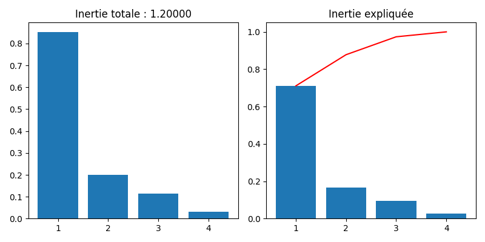
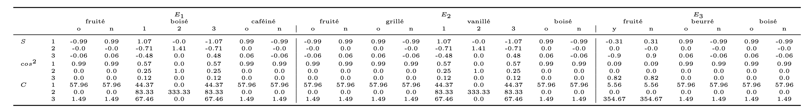
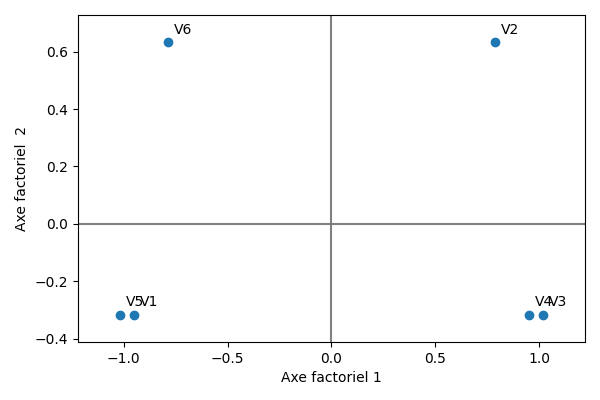
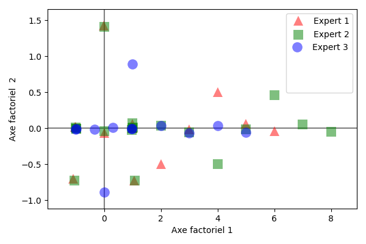
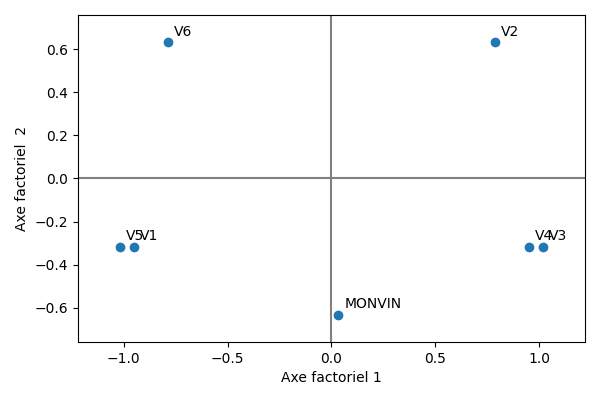

Analyse des correspondances multiples#
Tandis que l’analyse factorielle des correspondances permet d’expliquer la liaison entre deux variables qualitatives, l’analyse des correspondances multiples (ACM) s’intéresse au cas où l’on dispose de \(p\geq 2\) variables. C’est l’équivalent de l’ACP pour les variables qualitatives.
Notations#
On dispose d’un tableau de données \(\mathbf{H}=(h_{i,j})\) à \(n\) lignes et \(p\) colonnes, où \(n\) est le nombre d’individus, \(p\) le nombre de variables qualitatives mesurées et pour \(i\in[\![1,n]\!],j\in[\![1,p]\!],h_{ij}\in\mathcal{M}_j\), \(\mathcal{M}_j\) étant l’ensemble des modalités de la j\(^e\) variable. Si \(m_j\) est le cardinal de \(\mathcal{M}_j\), alors \(m=\sum_{k=1}^p m_k\) est le nombre total de modalités.
Definition 43 (Tableau disjonctif complet)
Le tableau disjonctif complet \(\mathbf T\) des données est un tableau \(n\times m\) tel que
\((\forall i\in[\![1,n]\!],j\in[\![1, m]\!])\; \mathbf T_{ij} = \left \{ \begin{array}{cl} 1&\textrm{si l'individu i possède la modalité j}\\0 & \textrm{sinon}\end{array}\right .\)
On déduit de ce tableau disjonctif le tableau de Burt correspondant, \(\mathbf B=\mathbf T^T \mathbf T\), qui rassemble les croisements deux à deux de toutes les variables, i.e tous les tableaux de contingence des variables deux à deux. Sur la diagonale de \(\mathbf B\) se trouvent les coefficients \(B_{ii}=n_i\), donnant le nombre d’individus possédant la modalité \(i\). Les autres coefficients \(B_{ij} = \mathbf{T_{\bullet i}}^T \mathbf {T_{\bullet j}}\) quantifient le nombre d’individus ayant les modalités \(i\) et \(j\).
Analyse#
Tableau de contingence de l’ACM#
En analyse des correspondances multiples, on traite \(\mathbf T\) comme un tableau de contingence. Les totaux en ligne sont alors égaux au nombre de variables \(p\), les totaux en colonne correspondent au nombre d’individus ayant la modalité correspondant à la colonne traitée. Pour une colonne \(j\), on note ce total \(n_j\) Le total de tous les coefficients de \(\mathbf T\) vaut donc \(np\).
Comme dans le cas de l’AFC, l’ACM considère les fréquences, les profils ligne et les profils colonne.
Pour les fréquences :
\(f_{ij}=T_{ij}/np\) est la fréquence conjointe et vaut donc \(1/np\) si l’individu \(i\) possède la modalité \(j\) et 0 sinon. On range ces coefficients dans une matrice \(\mathbf{F}\in\mathcal{M}_{nm}(\mathbb{R})\)
le poids des lignes est constant et vaut \(1/n\). On note alors \(\mathbf{a} = (\frac{1}{n}\cdots \frac{1}{n})^T\in\mathbb{R}^n\) le vecteur des poids des individus.
le poids des colonnes vaut \(n_j/np\), et est d’autant plus fort que la modalité \(j\) est fréquente. On note alors \(\mathbf{b} = (\frac{n_1}{np}\cdots \frac{n_m}{np})^T\in\mathbb{R}^m\) le vecteur des poids des modalités.
Comme en analyse factorielle des correspondances, on note \({\bf D_n}=diag\left ({\bf a}\right )\) et \({\bf D_m}=diag\left ({\bf b} \right )\).
Pour les profils ligne et colonne :
on lit dans \(\mathbf T\) le i\(^e\) profil ligne, considéré comme un vecteur de \(\mathbb{R}^m\), de composantes \(T_{ij}/p,j\in[\![1,m]\!]\). Ces profils sont rangés dans une matrice \({\bf A}\in\mathcal{M}_{nm}(\mathbb{R})\) et on a \({\bf A}={\bf D_n^{-1}F}\).
on lit dans \(\mathbf T\) le j\(^e\) profil colonne, considéré comme un vecteur de \(\mathbb{R}^n\), de composantes \(T_{ij}/n_j,i\in[\![1,n]\!]\). Ces profils sont rangés dans \({\bf B}\in\mathcal{M}_{nm}(\mathbb{R})\) et on a \({\bf B}={\bf FD_m^{-1}}\).
L’ACM considère, comme l’AFC, deux nuages de points centrés :
le nuage des \(n\) individus dans \(\mathbb{R}^m\), i.e. les \(n\) lignes de la matrice \({\bf D_n^{-1}(F-ab^T})\). Chaque individu est pondéré par \(1/n\)
le nuage des \(m\) modalités dans \(\mathbb{R}^n\), i.e. les \(n\) lignes de la matrice \({\bf (F-ab^T)D_m^{-1}}\). Chaque modalité \(j\) est pondérée par \(n_j/np\).
Distances entre individus et entre modalités#
En analyse des correspondances multiples, on utilise la distance du \(\chi^2\) dans \(\mathbb{R}^m\) et \(\mathbb{R}^n\) :
dans l’espace des individus, la métrique est \(\mathbf {D_m}^{-1}\) :
\(\chi^2(i,i') = (\mathbf{A}_{i\bullet}-\mathbf{A}_{i'\bullet})^T\mathbf {D_m}^{-1} (\mathbf{A}_{i\bullet}-\mathbf{A}_{i'\bullet}) = \displaystyle\sum_{j=1}^m\frac{1}{f_{\bullet j}}\left (\frac{T_{ij}-T_{i'j}}{p} \right )^2 = \frac {n}{p}\displaystyle\sum_{j=1}^m\frac{1}{{n_j}}\left (T_{ij}-T_{i'j}\right )^2\) Deux individus sont proches s’ils possèdent les mêmes modalités, sachant que l’on donne plus de poids au fait que ces deux individus ont en commun une modalité rare (\(n_s\) petit).
dans l’espace des modalités, la métrique est \(\mathbf {D_n}^{-1}\) :
\(\chi^2(j,j') = (\mathbf{B}_{\bullet j}-\mathbf{B}_{\bullet j'})^T\mathbf {D_n}^{-1} (\mathbf{B}_{\bullet j}-\mathbf{B}_{\bullet j'}) = n\displaystyle\sum_{i=1}^n\left (\frac{T_{ij}}{n_j} -\frac{T_{ij'}}{n_{j'}}\right )^2\) et deux modalités sont proches si elles sont possédées par les mêmes individus.
Remark 24
On a de plus \(\chi^2(j,\mathbf{a}) = \frac{n}{n_j}-1\) et \(f_{\bullet j}\chi^2(j,\mathbf{a}) = \frac{1}{p}\left( 1-\frac{n_j}{n}\right )\). Donc la distance d’une modalité au centre du nuage est d’autant plus grande que la modalité est rare et la part de l’inertie totale, due à une modalité est d’autant plus grande que la modalité est rare. On évite donc en pratique de conserver dans l’analyse les modalités trop rares.
De même, puisque \(\displaystyle\sum_{k\in \mathcal{M}_j}f_{\bullet k}\chi^2(k,\mathbf{a}) = \frac{1}{p}\left( m_j-1\right )\), la part de l’inertie totale, due à une variable \(j\) est d’autant plus grande que le nombre de modalités de cette variable est grand. Là aussi, on évite en pratique de conserver dans l’analyse des variables ayant des nombres de modalités trop différents.
Principe de l’ACM#
L’analyse en composantes multiples consiste alors à appliquer l’analyse factorielle des correspondances du tableau des contingences \(\mathbf T\), c’est-à-dire effectuer une ACP pondérée des nuages des point-individus et des point-modalités .
Une différence notable vient cependant de l’interprétation de l’inertie de ces nuages de points individus (\(I(\mathbf{A})\)) et modalités (\(I(\mathbf{B})\)). En AFC, on pouvait interpréter statistiquement cette inertie en terme de \(\chi^2/n\) mesurant l’indépendance entre les deux variables qualitatives. Ici, ce n’est plus le cas puisque l’on peut montrer que \(I(\mathbf{A}) = I(\mathbf{B})= m/p-1\). L’inertie dépend donc du nombre moyen \(m/p\) de catégories par variable.
Remark 25
Les anglo-saxons considère que l’ACM consiste à effectuer l’analyse factorielle des correspondances du tableau de Burt \(\mathbf T^T \mathbf T\), matrice symétrique de taille \(m\). Les profils ligne et colonne sont alors identiques et correspondent aux modalités que l’on veut analyser. On ne peut donc pas effectuer d’analyse des individus.
Interprétation des résultats#
Inertie expliquée#
L’inertie totale, égale comme nous l’avons vu à \(m/p-1\) se calcule également comme la somme des valeurs propres \(\lambda_1+\cdots +\lambda_r\), où \(r=min(n-1,m-p)\) est le nombre de valeurs propres non nulles issues de l’ACP. La part d’inertie expliquée par l’axe \(z\) est alors \(\lambda_z/(\lambda_1+\cdots +\lambda_r)\). En revanche, point important, le nombre d’axes retenus pour l’interprétation ou le recodage ne peut pas être choisi à partir de ces pourcentages d’inertie expliquées, contrairement à l’ACP.
Contributions et représentation#
En reprenant les résultats de l’AFC, on montre que :
les individus les plus excentrés sur les plans factoriels sont ceux qui contribuent le plus
les modalités les plus excentrées ne sont pas nécessairement celles qui contribuent le plus. En effet, leur contribution dépend de leur fréquence.
la contribution d’une variable qualitative \(j\) à un axe \(z\) donne une idée de la liaison entre cette variable et la composante principale correspondant à \(z\)
une représentation graphique consiste alors à représenter les variables qualitatives sur un plan factoriel \((z,z')\) : on propose en abscisses (respectivement ordonnées) les contributions des variables à l’axe \(z\) (resp. \(z'\))
on évalue la qualité de la représentation de la même manière qu’en ACP, à l’aide des cosinus carrés. Si deux individus sont bien projetés alors s’ils sont proches en projections, ils sont effectivement proches dans leur espace d’origine et on peut alors interpréter leur proximité : deux individus se ressemblent (au sens de la distance du \(\chi^2\)) s’ils ont choisis les mêmes modalités et ; deux modalités se ressemblent (en terme de \(\chi^2\)) si elles sont possédées par les mêmes individus.
Cas particulier \(p\)=2#
Dans le cas \(p=2\), on observe \(2\) variables ayant respectivement \(m_1\) et \(m_2\) modalités. On se retrouve donc dans le cas où l’AFC s’applique et on peut :
soit analyser le tableau \(\mathbf{T}\in\mathcal{M}_{n,m_1+m_2}(\mathbb{R})\) par analyse en composantes multiples,
soit analyser le tableau de contingence \(\mathbf{K}\in\mathcal{M}_{m_1,m_2}(\mathbb{R})\) par AFC.
Si on note \(Sp(\mathbf{K}) = (\mu_i)\) et \(Sp(\mathbf{T}) = (\lambda_i)\) alors on montre que \(\mu_r = (2\lambda_r - 1)^2\) On en déduit qu’à chaque valeur propre de l’AFC correspondent deux valeurs propres de l’ACM \(\lambda_r = \frac{1\pm \sqrt{\mu_r}}{2}\), et une relation entre les coordonnées factorielles des deux analyses
\(\begin{eqnarray*} \mathbf{c}_1 = \begin{pmatrix} \mathbf{x_K}\\\mathbf{y_K}\end{pmatrix}\ &\textrm{pour}& \lambda_r = \frac{1+ \sqrt{\mu_r}}{2}\\ \mathbf{c}_2 = \begin{pmatrix} \mathbf{x_K}\\-\mathbf{y_K}\end{pmatrix}\ &\textrm{pour}& \lambda_r = \frac{1- \sqrt{\mu_r}}{2} \end{eqnarray*}\)
où \(\mathbf{x_K},\mathbf{y_K}\) sont les composantes principales des profils ligne et colonne de \(K\). De là viennent deux constats :
dans l’analyse en composantes multiples de 2 variables, on ne retient que les valeurs propres supérieures strictement à 1/2, les composantes correspondant aux valeurs propres inférieures se déduisant facilement
Les pourcentages d’inertie expliqués par les axes en ACM sont souvent très faibles et ne peuvent donc pas être interprétés comme en AFC et en ACP.
Exemple#
On souhaite évaluer l’effet de l’espèce de chêne sur des vins rouges vieillis en barrique. Un même vin a été vieilli dans six barriques différentes fabriquées avec deux types de chêne : les vins \(V_1\), \(V_5\) et \(V_6\) ont été élevés avec le premier type de chêne, tandis que les vins \(V_2\), \(V_3\) et \(V_4\) ont été élevés avec le second. Trois experts \(E_1,E_2,E_3\) ont ensuite choisi entre deux et cinq variables pour décrire les vins. Pour chaque vin et pour chaque variable, l’expert évalue l’intensité, codée soit comme une réponse binaire (i.e. fruité vs. non fruité), soit comme une réponse ternaire (i.e. pas fruité, un peu fruité, très fruité). On code le tout par un tableau disjonctif complet :

L’objectif de l’étude est d’une part de proposer une typologie des vins et d’autre part de savoir s’il y a un accord entre les échelles utilisées par les experts.
La figure suivante présente le résultat de l’analyse spectrale en lignes. Les tableaux qui suivent donnent les coordonnées des individus (\(S\)), la qualité de leur représentation et leur contribution (C\(\times 10^3\)) sur les trois premiers axes factoriels.

Vin |
\(V_1\) |
\(V_2\) |
\(V_3\) |
\(V_4\) |
\(V_5\) |
\(V_6\) |
|
|---|---|---|---|---|---|---|---|
\(S\) |
1 |
-0.951 |
0.787 |
1.018 |
0.951 |
-1.018 |
-0.787 |
2 |
-0.316 |
0.632 |
-0.316 |
-0.316 |
-0.316 |
0.632 |
|
3 |
0.43 |
0.387 |
0.103 |
-0.43 |
-0.103 |
-0.387 |
|
\(cos^2\) |
1 |
0.754 |
0.516 |
0.863 |
0.754 |
0.863 |
0.516 |
2 |
0.083 |
0.333 |
0.083 |
0.083 |
0.083 |
0.333 |
|
3 |
0.154 |
0.125 |
0.009 |
0.154 |
0.009 |
0.125 |
|
\(C\) |
1 |
176.68 |
120.986 |
202.334 |
176.68 |
202.334 |
120.986 |
2 |
83.333 |
333.333 |
83.333 |
83.333 |
83.333 |
333.333 |
|
3 |
267.821 |
216.945 |
15.234 |
267.821 |
15.234 |
216.945 |

On peut alors projeter les individus lignes ou colonnes sur le premier plan factoriel.

On peut alors par exemple utiliser le type de chêne (MONCHENE) comme une variable supplémentaire (ou illustrative) à projeter sur l’analyse après coup. On peut également projeter après analyse un nouveau vin (MONVIN, donc une observation supplémentaire), testé par les experts. Lorsque ces derniers n’étaient pas sûrs de la façon d’utiliser un descripteur, un modèle de réponse (1/2, 1/2) est utilisé pour représenter la réponse.
